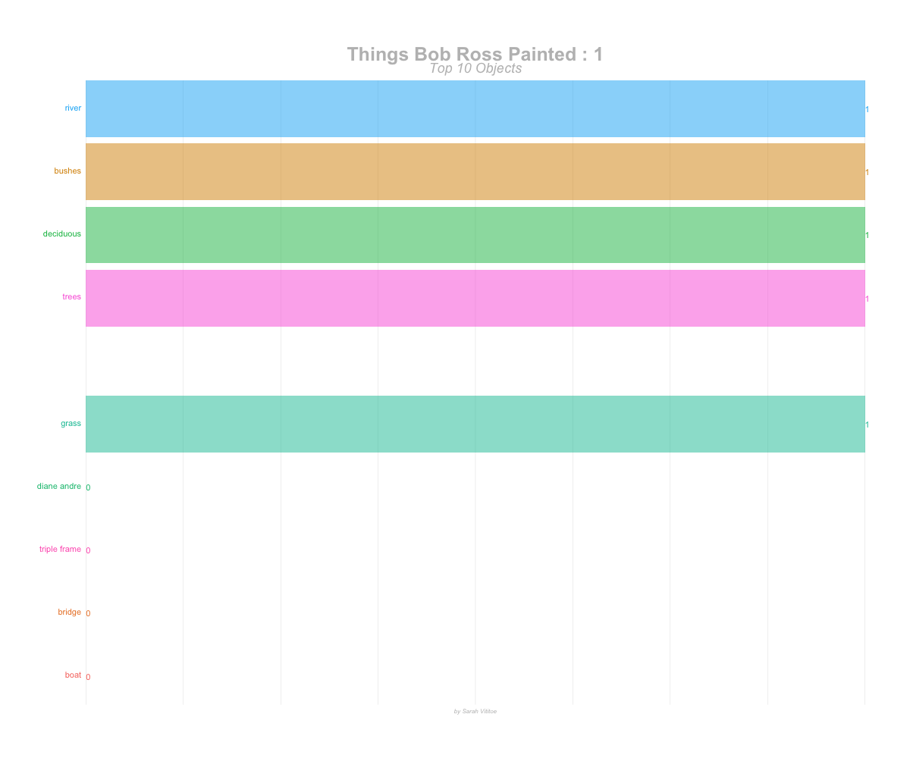

bob_ross <- readr::read_csv("https://raw.githubusercontent.com/rfordatascience/tidytuesday/master/data/2019/2019-08-06/bob-ross.csv") %>%
janitor::clean_names() %>%
extract(episode, c("season", "episode"), "S(.*)E(.*)", convert = TRUE) %>%
mutate(episode_number = 1:nrow(.))## Parsed with column specification:
## cols(
## .default = col_integer(),
## EPISODE = col_character(),
## TITLE = col_character()
## )## See spec(...) for full column specifications.bob_ross_tidy <- bob_ross %>%
select(episode_number, everything()) %>%
gather("object", "value", apple_frame:ncol(.)) %>%
group_by(object) %>%
mutate(cum_value = cumsum(value)) %>%
ungroup() %>%
mutate(season = str_c("Season ", season)) %>%
mutate(object = str_replace_all(object, "_", " ")) %>%
select(object, cum_value, episode_number, season) %>%
group_by(episode_number) %>%
mutate(rank = rank(-cum_value, ties.method = "random")) %>%
filter(rank <= 10, object != "tree", object != "mountains") %>%
ungroup()static <- bob_ross_tidy %>%
ggplot(aes(x = rank, group = object, fill = as.factor(object), color = as.factor(object))) +
geom_tile(aes(y = cum_value/2,
height = cum_value,
width = 0.9), alpha = 0.5, color = NA) +
geom_text(aes(y = 0, label = paste(object, " ")), vjust = 0.2, hjust = 1) +
geom_text(aes(y=cum_value,label = cum_value, hjust=0)) +
coord_flip(clip = "off", expand = FALSE) +
scale_y_continuous() +
scale_x_reverse() +
theme(axis.line=element_blank(),
axis.text=element_blank(),
axis.ticks=element_blank(),
axis.title=element_blank(),
legend.position="none",
panel.background=element_blank(),
panel.border=element_blank(),
panel.grid.major=element_blank(),
panel.grid.minor=element_blank(),
panel.grid.major.x = element_line( size=.1, color="grey" ),
panel.grid.minor.x = element_line( size=.1, color="grey" ),
plot.title=element_text(size=25, hjust=0.5, face="bold", colour="grey", vjust=-1),
plot.subtitle=element_text(size=18, hjust=0.5, face="italic", color="grey"),
plot.caption =element_text(size=8, hjust=0.5, face="italic", color="grey"),
plot.background=element_blank(),
plot.margin = margin(2,2, 2, 4, "cm"))anim <- static +
transition_states(episode_number, transition_length = 4, state_length = 1) +
view_follow(fixed_x = TRUE) +
labs(title = 'Things Bob Ross Painted : {closest_state}',
subtitle = "Top 10 Objects",
caption = "by Sarah Vititoe")animate(anim, 200, fps = 20, width = 1200, height = 1000,
renderer = gifski_renderer("gganim.gif"))